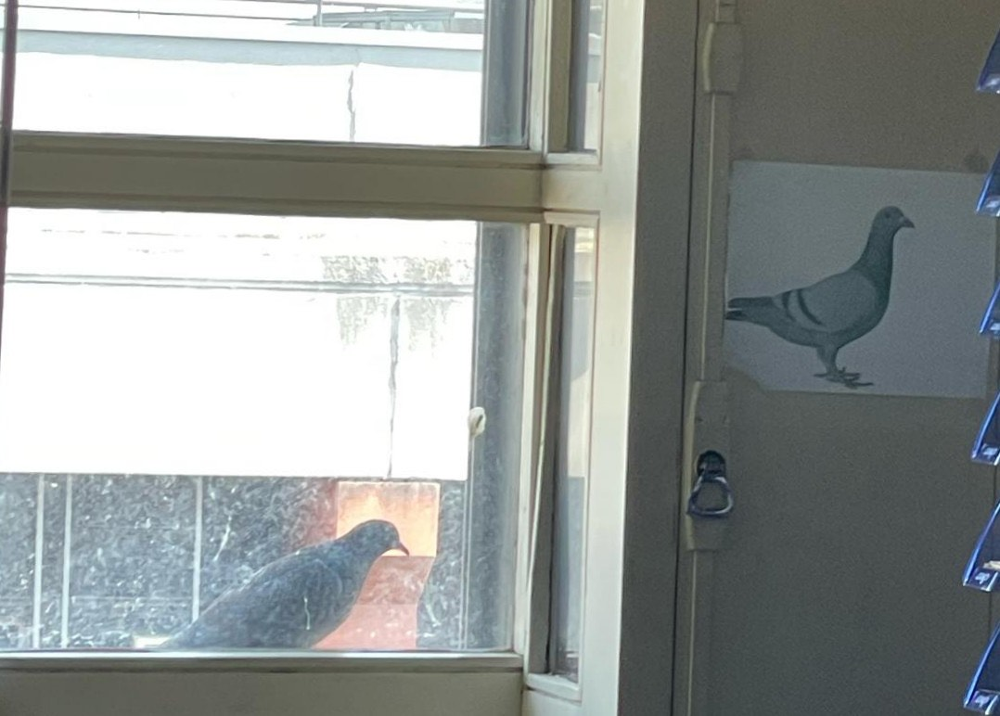

Address:
Institut für Algebraische GeometrieE-mail address : lagarde[at]math.uni-hannover.de
Office: G108 (Building 1101)
Institut für Algebraische Geometrie
I am a research assistant in the Institut für Algebraische Geometrie of Leibniz Universität Hannover, in the group of Stefan Schreieder. Before that, I was a PhD student in the Laboratoire Analyse, Géométrie et Applications (LAGA) of Université Paris 13, under the supervision of Olivier Wittenberg. Before that, I was an ALGANT student at Universiteit Leiden and Université de Bordeaux.
I am mainly interested in (arithmetic) algebraic geometry, notably
cohomological methods for rational points (Brauer-Manin, reciprocity obstructions) and algebraic cycles, and related topics (unramified cohomology, algebraic K-theory, motivic cohomology, motives, motivic homotopy theory).